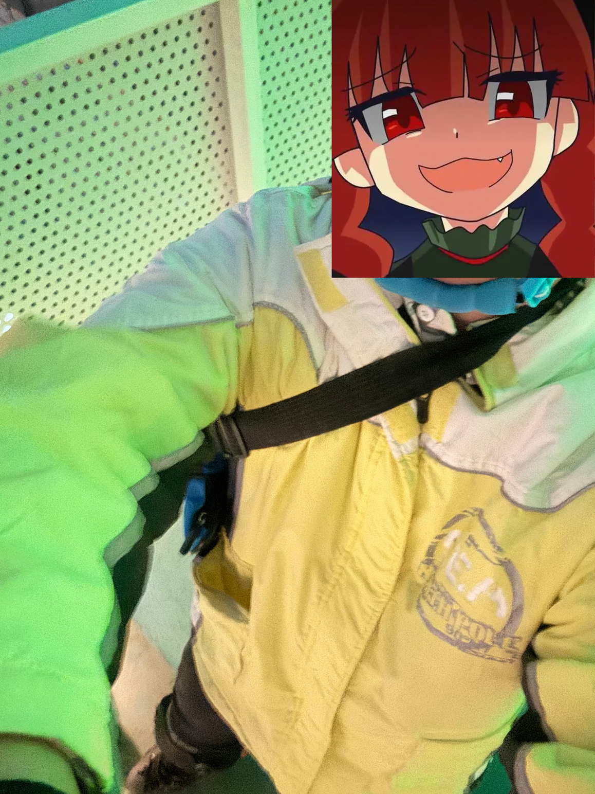

主要更新记录
2025-2-4：
- 创建文章
- 撰写前言、最后的轮滑课的部分内容
前言
2024年12月17号下午，轮滑课上的游戏环节中，我在一次高速滑动的刹车过程中站立不稳，以左手撑地的姿势严重摔倒，造成左臂尺桡骨远端粉碎性骨折。由于是在学期当中，而且临近各种考试，因此在这之后，我也经历了诸如向家人同学及老师报备、申请缓考、申请课程请假、办理公费医疗以及学校报销等各类手续办理过程，同时也体验了骨折正骨、打石膏、住院治疗、保守治疗以及恢复等骨折治疗过程。更重要的是，在这个过程中，我感受到了人与人之间的各种关系，有家人的关心与照顾、过度关照与矛盾，有朋友的倾力相助与线上陪伴的感激与庆幸，有学校与老师的人文关怀，更有我与自己的一次次斗争和和解、一次次崩溃与拼尽全力继续生活。或许还会有我未来的奋起吗？我衷心的希望，在一段时间后的我重新来编辑这篇文章时，我能够自豪的补上那可能存在于未来的努力经历。
因此，我希望记录这一段珍惜而宝贵的经历，一方面是能够将一些流程的亲身体验明细化，让有需要的且看到这篇文章的人能够得到借鉴，另外更是对自己这段时间的一个反思。啊啊，我也是好久没反思过了。
不过如果有精力的话，我还是想着把各种手续部分给单独的拿出来专门写一篇文章。这篇文档大概率还是以有感情的叙事为主，可能会有很多废话。等以后再说吧。
最后的轮滑课
下午的轮滑课上，同学们组织着一场追逐的游戏。现在想想在轮滑课程上玩追人游戏可能确实也是考虑欠妥，但是大家也都是全副武装，加上也上了一个学期的课，估计也不会有什么问题。
然而那一阵子的我却真的是完全热爱上了轮滑这项运动，热爱到了胆大包天的程度。就在这次课的上一周，我在上完轮滑课之后深感意犹未尽，在南篮球场又滑了一个多小时，之后又和朋友夸下海口，说我要穿着轮滑鞋上天桥。更离谱的是，之后我也真的完全不顾危险，就穿着轮滑鞋从那个对于骑自行车来说都上着费劲的斜坡上一点一点走了上去，还拍下了几张自拍。之后，我更是决定，要继续穿着轮滑鞋从那个斜坡上下去。下坡的过程中，虽然我也是很努力的抓着栏杆，但是还是避免不了重重的摔了好几次。现在回想起来，但凡当初我胆子再大一点，我现在还能不能在这里打字都是个问题。
下桥之后，我继续穿着轮滑鞋在街上滑行，一路滑到北湖，准备环湖再滑一圈。当然了，我显然又一次高估了我的轮滑水平，也低估了北湖跑道的坡度。再一个很陡的下坡上，我无法控制自己的速度，翻倒在了旁边的草丛中。旁边一位男同学见状，急忙走过来扶起我，向我询问情况。见我没什么大碍，他也就和我搭起了话：“嗨呀我之前也选过轮滑课，当时还是疫情期间，我们当时也没滑了几次……”抱着惊奇与感动的心情，我们围着北湖边聊边走，说了很久的话。他离开的时候，我的内心早已充满了满足感。那一阵子，来自各方的压力使得我陷入了无尽的摆烂的循环当中，从下轮滑课以来的神奇的经历让我心潮澎湃。后来我和一个朋友在QQ上聊天，说什么要给轮滑课程评价下面写小作文云云，现在想来，如果当时真的写了，那也挺讽刺的。（不过按照一些奇妙的因果律来看说不定我写了我就不摔跤了（？））
17号那天，我刚上完物理课，一边走出门一遍急急忙忙的赶回宿舍去取我的轮滑装备。路上一直在想着刚才为什么没鼓起勇气去物理老师那个问题，顺便又自己批判了一下自己这种老是在意别人脸色，导致耽误事情的做法。